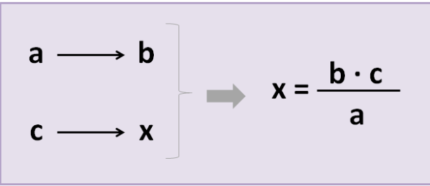
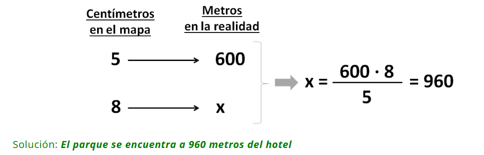
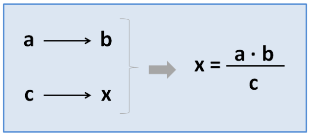
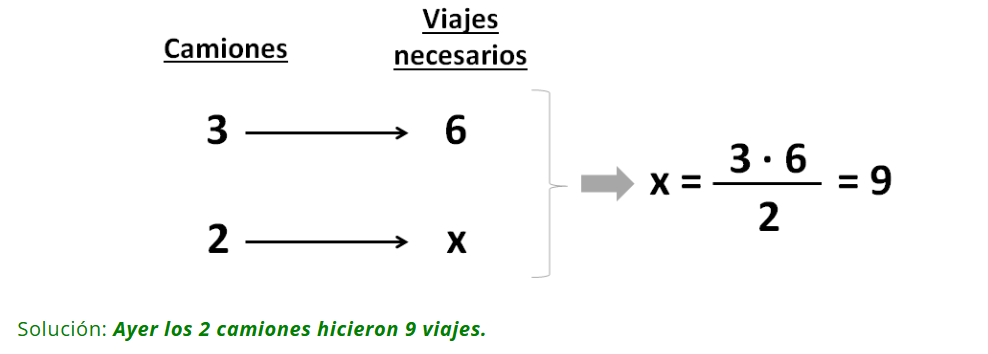

PROPÓSITO:
- Comprender la regla de tres simple directa y cómo se aplica cuando las magnitudes son directamente proporcionales.
- Comprender la regla de tres simple inversa y cómo se aplica cuando las magnitudes son inversamente proporcionales.
- Resolver problemas cotidianos aplicando la regla de tres simple directa e inversa.
PROPORCIONALIDAD
Si la relación entre las magnitudes es directa (cuando aumenta una magnitud también lo hace la otra) hay que aplicar la regla de tres simple directa.
Por el contrario, si la relación entre las magnitudes es inversa (cuando aumenta una magnitud disminuye la otra) se aplica la regla de tres simple inversa.
¿QUE ES LA REGLA DE TRES SIMPLE?
La regla de 3 simple es una operación que nos ayuda a resolver rápidamente problemas de proporcionalidad, tanto directa como inversa.
Para hacer una regla de tres simple necesitamos 3 datos: dos magnitudes proporcionales entre sí, y una tercera magnitud. A partir de estos, averiguaremos el cuarto término de la proporcionalidad.
REGLA DE TRES SIMPLE DIRECTAMENTE PROPORCIONAL
Empezaremos viendo cómo aplicarla en casos de proporcionalidad directa (cuando aumenta una magnitud también lo hace la otra).
Colocaremos en una tabla los 3 datos (a los que llamamos «a», «b» y «c») y la incógnita, es decir, el dato que queremos averiguar (que llamaremos “x”). Después, aplicaremos la siguiente fórmula:

EJEMPLO:
Al llegar al hotel nos han dado un mapa con los lugares de interés de la ciudad de Huancayo, y nos han dicho que 5 centímetros del mapa representan 600 metros de la realidad. Hoy queremos ir a un parque que se encuentra a 8 centímetros del hotel en el mapa. ¿A qué distancia del hotel se encuentra este parque?
Para resolver el problema vamos a hacer la tabla con los 3 datos y la incógnita (“x”), y hallaremos “x” con la fórmula que acabamos de aprender:

REGLA DE TRES SIMPLE INVERSAMENTE PROPORCIONAL
Ahora vamos a ver cómo aplicar la regla de 3 simple en casos de proporcionalidad inversa (cuando aumenta una magnitud disminuye la otra).
Colocaremos los 3 datos y la incógnita en la tabla igual que los hemos colocado en el caso anterior. Pero aplicaremos una fórmula distinta:

EJEMPLO:
Ayer 2 camiones transportaron una mercancía desde el puerto hasta el almacén. Hoy 3 camiones, iguales a los de ayer, tendrán que hacer 6 viajes cada uno para transportar la misma cantidad de mercancía del almacén al centro comercial. ¿Cuántos viajes tuvieron que hacer ayer los camiones?
Colocamos los datos en una tabla y aplicamos la fórmula de la regla de 3 simple inversa:

CONCLUSIÓN:
Los estudiantes habrán adquirido las competencias necesarias para identificar situaciones de proporcionalidad directa e inversa, así como para resolver problemas aplicando la regla de tres simple en ambos casos. Este conocimiento es fundamental para comprender la relación entre magnitudes y para enfrentar desafíos matemáticos en la vida diaria, tales como cálculos de costos, tiempo, y velocidad. Además, el uso de ejemplos prácticos y cercanos a su realidad refuerza el aprendizaje y la aplicabilidad de este método en diversos contextos.